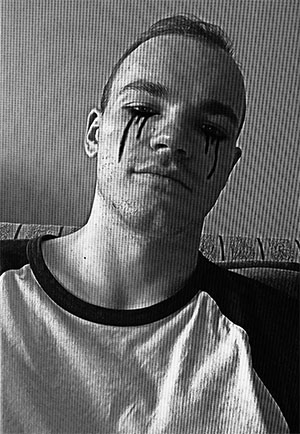

|

|
Balázsi Levente 26 Budapest angol/holland nyelvszak, karate edző Hobbik: Karate, túrák, koncertek Kedvenc film: Verdák |
Szeretnék egy remote munkát találni, ami mellett marad lehetőségem folytatni az edzésvezetést is. Vizuális típus vagyok, szeretem ha a munkámnak látható eredménye van, szeretek bogarászni, a megoldást kutatni a problémákra. A front end-et egy barátom ajánlotta, szerinte illene hozzám ez a világ.